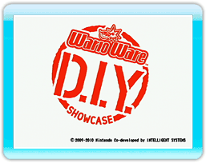
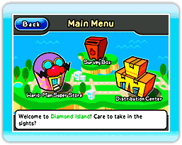
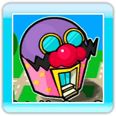
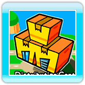
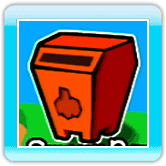

9 |
Menú principal |
 |
|

En la pantalla del título, apunta a la pantalla y oprime ● Pantalla del menú principal ·Wario-Man Super Store (súper tienda de ·Distribution Center (centro de distribución) Notas: Cuando visites el Distribution Center por primera vez, podrás elegir si quieres activar o desactivar la opción D.I.Y. Friend Notification Switch (notificación de amigos D.I.Y.). (Para obtener más información sobre esta opción, consulta la página 15). Cuando lleguen nuevos productos al Distribution Center, verás un icono como este: ·Survey Box (buzón de encuestas) Nota: Cuando llegue una encuesta al Survey Box, verás un icono como este:
|
 para avanzar al menú principal.
para avanzar al menú principal. |
 |
 |